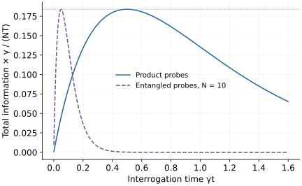

Research question
When does entanglement improve a measurement?
The ideal Heisenberg scaling is a starting point; useful sensing advantage must survive noise and equal-resource comparisons.
A worked entry into an open research direction · Sources checked 20 October 2026
The question in perspective
Quantum sensors turn an unknown parameter into a measurable change of state. Entanglement can make that change sharper, but can also make the state more fragile. The research question is when the improvement survives realistic preparation, interrogation, and readout costs.
Compare equal resources
Let an unknown angular frequency \(\omega\) generate \(U_\omega(t)=e^{-i\omega tG}\), with \(G=\tfrac12\sum_{j=1}^N Z_j\). For a pure input, the quantum Fisher information is \(F_Q=4t^2\operatorname{Var}(G)\). This quantity bounds local estimation precision: with \(\nu\) independent repetitions, a locally unbiased estimator obeys \(\Delta\omega\geq1/\sqrt{\nu F_Q}\). Attaining the bound requires an appropriate measurement and estimation regime.
For \(\ket+^{\otimes N}\), the variances add, giving \(F_Q=Nt^2\). The entangled state \((\ket{0}^{\otimes N}+\ket{1}^{\otimes N})/\sqrt2\) has \(\operatorname{Var}(G)=N^2/4\), so \(F_Q=N^2t^2\). At fixed interrogation time and repetition count, these yield ideal uncertainties proportional to \(N^{-1/2}\) and \(N^{-1}\), respectively.
Now assume independent Markovian dephasing, with each qubit’s off-diagonal matrix element multiplied by \(e^{-\gamma t}\). The entangled state’s coherence is multiplied by \(e^{-N\gamma t}\). Its single-interrogation information becomes \(N^2t^2e^{-2N\gamma t}\), while N independent probes supply \(Nt^2e^{-2\gamma t}\).
Give both strategies the same total interrogation budget \(T\), neglect preparation and readout time, and use \(\nu\approx T/t\). Their total information is
\[\mathcal F_{\rm ent}=N^2Tt\,e^{-2N\gamma t},\qquad \mathcal F_{\rm prod}=NTt\,e^{-2\gamma t}.\]
Optimizing the interrogation time gives \(t_{\rm ent}=1/(2N\gamma)\) and \(t_{\rm prod}=1/(2\gamma)\). Both maxima equal \(NT/(2e\gamma)\), assuming the budget permits many repetitions at these times. In this model and comparison, the ideal scaling advantage disappears.

What is established
Quantum sensing methods connect coherent dynamics, control, and estimation. The toy calculation above concerns one particular noise process and pair of probe strategies; it is not a universal impossibility theorem for quantum-enhanced sensing.
Error-corrected metrology results identify conditions under which protection preserves a signal and permits Heisenberg scaling. The relation between the signal generator and noise operators matters: correcting an error can also erase the parameter one wanted to measure.
What remains unresolved
Useful sensing asks which states and measurements outperform the best available baseline under the actual noise, bandwidth, and time budget. Correlated noise, non-Markovian dynamics, limited controls, and nuisance parameters change the answer. Local Fisher information also needs a suitable prior or adaptive strategy when phase wrapping makes a global estimate ambiguous.
A concrete next investigation
Reproduce: plot both total-information curves and recover their optimal times. Compare the optimized curves rather than fixing a time favorable to one strategy.
Check: add a preparation/readout dead time \(t_d\), so \(\nu\approx T/(t+t_d)\), and optimize again. State whether probes can operate in parallel.
Extend: select a specified correlated-noise model or a realizable error-correcting sensing protocol. Derive a measurement and estimator, then compare error at equal total resources. A claimed advantage must survive that full comparison.
Selected references
- Quantum sensing
C. L. Degen, F. Reinhard, P. Cappellaro. 2016. Review
Introduces quantum sensing methods and how physical signals become measurable quantum dynamics.
- Achieving the Heisenberg limit in quantum metrology using quantum error correction
Sisi Zhou et al.. 2017. Research paper
Derives conditions for error-corrected sensing under a specified noise and control model.
Years refer to first arXiv submission. Publication details are available in the linked records.